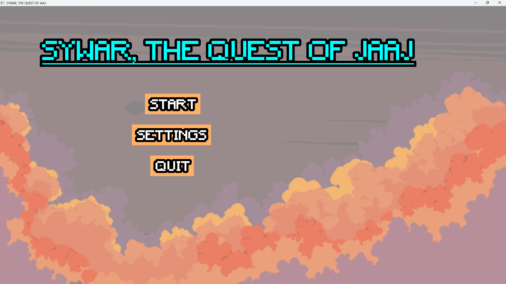

Projects
My First Game Project (Gaming Campus First Year)
SYWAR, THE QUEST OF JAAJ
Turn-based combat game developed in C++ with SFML.
Created in one week as my first game project, it showcases basic gameplay mechanics (attack, heal, skip turn) and highlights my early learning in code structure and game design.


Repository GitHub 👈
My Second Game Project (Gaming Campus First Year)
ZAUN, BATTLE OF NATIONS
Fan game shoot em up League of Legends link with ARCANE serie.
In three weeks, we were tasked with creating a shoot em up on a theme of our choice, featuring a customizable enemy wave spawning system.
This project allowed us to experiment with parallax effects and taught us a lot about entity management and class organization.


Repository GitHub 👈